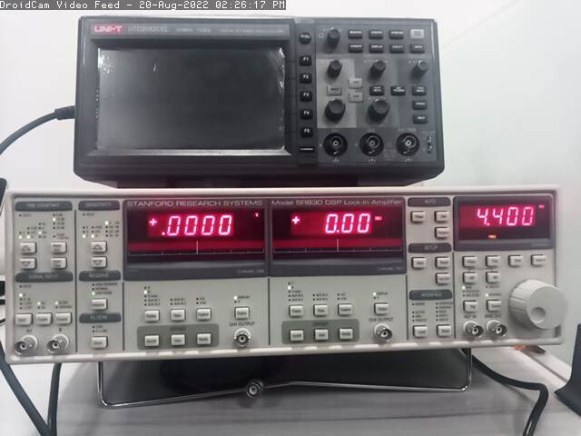

Cual es su Utilidad en Experimentos de Fotonica
Considere la figura 1, donde se representa un experimento para medir el coeficiente de
absorcion de una muestra usando una sola fuente de luz y un detector.
La fuente de luz puede ser o no monocromatica, pero en cualquier caso, si se trata de un
haz continuo, la intensidad medida por el detector sera constante.
Ya que otras fuentes de luz pueden incidir en el detector, se requiere de un metodo
para distingir las variaciones de la intensidad debidas unicamente a la fuente de interes
que incide en la muestra.
Para este proposito se agrega un chopper, que no es
mas que una rueda dentada, como se muestra en la figura 2. Esta al girar permite
modular en forma de pulsos la fuente de luz propia del experimento.
Fig.1 Experimento para medir coeficiente de absorcion. Tomado de [1]
 Fig.2 Chopper. Tomado de https://www.salukitec.com/se3001-optical-chopper/
Fig.2 Chopper. Tomado de https://www.salukitec.com/se3001-optical-chopper/
Fig.3 Medicion de coeficiente de absorcion usando chopper y LIA.Tomado de [1]
En la figura 3 se muestra el nuevo arreglo del experimento, que agrega el chopper y el LIA.
Ahora, las variaciones en la intensidad corresponderan a la frecuencia de modulacion introducidas
por el chopper.
Aunque las variaciones de la intensidad sean muy debiles respecto a todas las posibles fuentes
de ruido, el LIA nos permitira recuperar la señal y asi poder estimar la cantidad de luz abosorbida
por la muestra, por citar un ejemplo.
Principio de Operacion del LIA
Conociendo ya las motivaciones para el uso del LIA, es importante considerar los fundamentos
matematicos sobre los que se basa el intrumento, pero de manera superficial, ya que esta prentede
ser una introduccion rapida al manejo del intrumento y se considera que el lector ya un curso
sobre series de fourier.
Consideremos la señal \( v(t)_{in} \) donde \( \omega_0 \) es la frecuencia de modulacion debida al
chopper y \( v(t)_{noise} \) es el ruido.
$$ v(t)_{in} = v_0 sin(\omega_0 t + \phi) + v(t)_{noise} $$
La señal que se desea recuperar es \( v_0 sin(\omega_0 t + \phi) \) .
Por la teoria de series de fourier se sabe que la señal de ruido \( v(t)_{noise} \) se puede
descomponer como una suma infinita de señales seno y coseno. Tambien de los cursos
sobre series de fourier, sabemos que si multiplicamos \( v(t)_{in} \) por una sinusoidal de frecuencia
\( \omega_0 \) e integramos, todas las componentes de ruido se desvanencen, ya que son de frecuencias
diferentes y solo nos queda las variaciones relacionadas con la frecuencia \( \omega_0 \) .
De esta forma, aunque la amplitud de la señal que queremos recuperar sea muy debil y aunque
este inmersa en mucho ruido, es posible usar la propiedad de ortogonalidad entre señales seno de
difente frecuencia para recuperarla.
Para el lector que no este familiarizado con las series de fourier puede verificar en el siguiente
ejemplo de wolfram alpha y variar las frecuencias de ambas sinusoidales (siempre numeros enteros).
Ejemplo Wolfram
En la figura 4 se muestra el diagrama bloques funcional del LIA SR 830. En este diagrama de bloques
consideremos la señal "A" como \( v(t)_{in} \) . La señal "Reference" corresponderia a la sinusoidal
que usaremos para hacer la multiplicacion con "A". En caso de usar otro tipo de señal como una cuadrada,
el PLL y el oscilador interno generaran la sinusoidal pura a partir de
la cuadrada. Pero al final siempre sera una seno pura la se multiplique con A.
Debido a que no se conoce la fase \( \phi \) , entonces la multiplicacion se hace no solo con una
referencia seno pura, sino que se hace un desfase de 90 grados para obtener una coseno. Al aplicar
el mismo principio del producto con seno y conseno se puede obtener la magnitud y la fase de la
señal que se desea recuperar.
 Fig.4 Diagrama de bloques funcional del LIA SR 830. Tomado de [2]
Fig.4 Diagrama de bloques funcional del LIA SR 830. Tomado de [2]
Operacion SR 830 con Ejemplos
Ejemplo 1
Como ya se explico anteriormente el LIA espera a su entrada una señal de referencia y
la señal que se desea estudiar. Para el caso del modelo SR830, la señal de referencia
puede ser generada con un circuito o externo o usar el generador interno del LIA.
En la figura 5 se muestra el panel frontal del LIA
En la parte derecha, donde se ve el 4400, es la seccion donde se puede configurar la señal
de referencia interna, su frecuencia, amplitud y fase. Si se desea usar una señal de referencia
externa como una señal cuadrada entonces se oprime el boton source. Ya el LIA internamente se
encarga de generar una seno pura a partir de la señal cuadrada por medio del PLL y el oscilador.
En la seccion de Channel One y Channel Two se puede visualizar el resultado de la medicion.
con los botones DISPLAY y OUTPUT se puede seleccionar si se visualiza la componente frecuancial
en coordenadas cartesianas o polares. En caso de escoger coordenadas X y Y, una componente
correspondera a la seno y el otro al coseno.
Si se selecciona en coordenadas polares entonces CH1 mostrara la magnitud y CH2 la fase.
En CH1 y CH2 solamente se entrega las componentes X Y o R y \( \theta \) en forma analogica.
Para empezar a familiarizarnos, configurar una señal seno de 5khz con ayuda de un generador de
señales y un osciloscopio si lo cree conveniente.
Encender el LIA mientras se mantiene presionado el boton SETUP. Esto hace un reset del equipo, para
iniciar con lo valores de fabrica.
Connectar la señal del generador de señales al puerto A/I. Seguido de esto se usa la referencia
interna del LIA y se hace un barrido de frecuencias pasando por 5Khz para corroborar que las
mediciones de los canales X Y son 0 excepto en 5Khz. Esto se debe a que el producto entre 2 senos
siempre tendra un promedio cero a menos que ambas senos sean de la misma frecuencia.
Se puede notar en las componenentes X y Y puede haber una oscilacion. Esto se debe a que las
frecuencias de la referencia y la señal de entrada pueden estar muy cercanas pero no son exactamente
iguales.
En el puerto SINE OUT el LIA entrega la señal de referencia interna de forma analogica. Connectar
esta referencia interna en A/I en lugar del generador de señales y observar que esta oscilacion ya
no ocurre. Esto se debe a que en este caso la señal de entrada y referencia al ser las mismas,
entonces si tienen exactamente la misma frecuencia
Por esto, puede resultar mas conveniente visualizar en coordenadas R \( \theta \) , ya que
esto nos permitira visualizar la magnitud en esa frecuencia sin oscilaciones. Corroborar
esto conectando nuevamente el geneador y usando los botones DISPLAY y OUTPUT del panel CH1
Si se desea se puede conectar a un osciloscopio las salidas del CH1 y CH2 para corroborar
que corresponden al mismo valor mostrado en el panel pero en formato analogico.

Fig.5 Lock-In Amplifier SR830
Fig.6 Se configura una sinusoidal de 5khz con ayuda de un generador de señales
Fig.3 Medicion con LIA a la frecuencia de 5khz
Ejemplo 2
Considere la señal diente de sierra que se muestra a continuacion y su respectiva descomposicion
en series de fourier.
Fig.5 Serie de fourier truncada para la señal diente de sierra
Table.1 Los 10 primeros coeficientes de la serie de fourier en valor RMS
para la señal diente de sierra
En Link en el
archivo FourierSeries_example_1.nb, se encuentra un script de mathematica que explica la
descomposicion de forma mas detallada.
Por ahora solo consideremos que si se configura una diente de sierra con una amplitud
pico a pico de 2.2 v, las magnitudes de sus armonicos en valor RMS seran aproximadamente
los que se muestra en la tabla.
Conectar el generador nuevamente en A/I y usar la referencia interna del LIA para hacer un
barrido de frecuencias. Se recomienda escoger una frecuencia entre 1kHz y 10kHz en el generador
de señales. Si se escoge por ejemplo 2.2khz para la diente de sierra entonces su primera componente
estaria en 2200, la segunda en 4400, la tercera en 6600 etc.
Comprobar que la magnitud R a estas frecuencias concuerda con los valores de la tabla.
Estos 2 ejemplos deberian permitir, al que trabaja con el LIA por primera vez, tener un entendiemiento
basico e intuitivo sobre su manejo, operacion y aplicaciones. para produndizar mas se
recomienda leer el manual del fabricante [2], que se puede encontrar facilmente en google y tambien
consultar la referencia [1] si es posible.